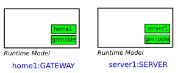
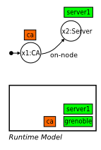
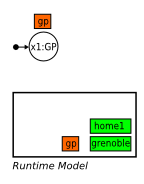
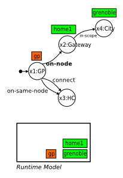
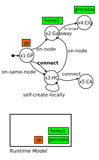
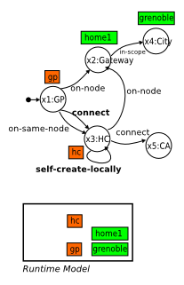
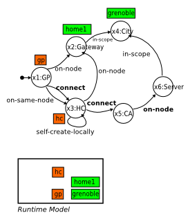
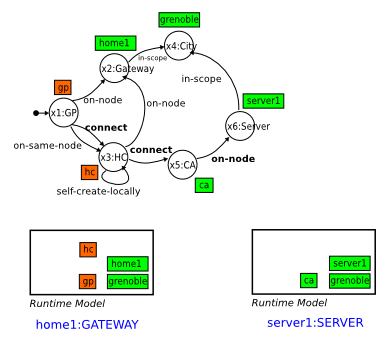

Project Links
Catalog
Other Links

Default Resolver
It implements the IResolver interface of the Cube Agent.
The Cube Agent call the resolveNewInstance method for each newly added instance to the Runtime Model.
In this page, we give a detailed information about the algorithms behind our default implementation of the Resolver module (we call it after simply Resolver and not Default Resolver).
Main concepts
- Resolution Graph: When the Cube Agent calls the Resolver to resolve a newly created instance, this last one creates a Resolution Graph. A Resolution Graph RG is a graph where vertices are typed variables (corresponding to instances of archetype Types) and the arcs are constraints (corresponding to archetype Constraints).
RG = <V, C>
- V: a set of typed variables where each one holds a null value or a one of the set of possible runtime instances of the corresponding archetype Managed Elements. Each variable holds also a historical table of the already tested values.
- C: a set of constraintes between the variables V. Each constraint has one or more of the following functions of capabilities: find, check and/or perform. These capabilities are implemented by constraint's corresponding ConstraintResolver.
Initial configuration
First, a new Resolution Graph is created with only one Variable containing the newly created instance as value.
Algorithm
Résumé
- When a new instance is created, the Resolver builds a Resolution Graph for it. At first, this graph has only one variable representing the newly created instance (which is UNRESOLVED when created).
- then, it tries to validate this instance against its specified archetype constraints. it adds to the initial variable of the graph all the direct related constraints (which provides the check capability).
- the Resolver loops the different check constraints. The examined variable (and so it representing instance) will be VALID if all the constraints returns TRUE (In future work, we will have a non mandatory constraints so that the instance will be VALID if all it mandatory constraints are true).
- When the Resolver calls the check function of each constraint:
- it first tries to initialize the related variable value directly from the constrained variable. This will optimize the search algorithm.
- if the related variable always null:
- the resolved starts first by looking for a value for this related constraint.
- it add to it all its direct related archetype constraints that provides the find capability.
- by order of priority, it calls each one's specific resolver to find a value for the current variable.
- if value found, go next..
- the resolved starts first by looking for a value for this related constraint.
- if the related variable has a value:
- if the current constrained variable is in the UNRESOLVED state, the Resolver executes the perform function of the constraint (if the constraint provides this capability).
- before calling the check function of the constraint's specific resolver, it first checks the related variable if it is always VALID.
Details
Resolver
on newInstance(Instance i, RuntimeModel rm, Archetype arch)
RG = createResolutionGraph(i)
resolved = resolveVar(RG.topVariable, rm, arch)
if (resolved == true) then
validateSolution(RG)
else
log "no solution found"
end ifVariable
resolveVar(Variable v, RuntimeModel rm, Archetype arch)
/* if v has no value, tries to find a value for it */
if (v is null) then
value = findValueForVariable(v, rm)
if (value is null) then
return false /* not resolved */
end if
end if
/* add the checking constraints related to v */
addCheckingConstraints(v, Archetype)
for each Constraint c of v.constraints do
ck = checkConstraint(c, rm)
/* if only one constraint is not satisfied, return false */
if (ck is FALSE) then
return false /* not resolved */
end if
end for findValueForVariable(Variable v, RuntimeModel rm)
Constraint
checkConstraint(Constraint c, RuntimeModel rm)
Running Example
Archetype
<cube xmlns:core="fr.liglab.adele.cube.core">
<archetype id="org.example.cube" name="Cube example" version="1.0">
<types>
<core:scope id="CITY"/>
<core:node id="SERVER"/>
<core:node id="GATEWAY"/>
<core:component id="GP"/>
<core:component id="HC"/>
<core:component id="CA"/>
</types>
<constraints>
<variables>
<var id="city" type="CITY"/>
<var id="server" type="SERVER"/>
<var id="gateway" type="GATEWAY"/>
<var id="gp" type="GP"/>
<var id="hc" type="HC"/>
<var id="ca" type="CA"/>
</variables>
<core:on-node v1="gp" v2="gateway"/>
<core:on-same-node v1="gp" v2="hc" />
<core:connect v1="gp" v2="hc"/>
<core:on-node v1="hc" v2="gateway" priority="1"/>
<core:in-scope v1="gateway" v2="city"/>
<core:self-create-locally v="hc" priority="2"/>
<core:connect v1="hc" v2="ca" priority="3"/>
<core:in-same-scope v1="hc" v2="ca"/>
<core:on-node v1="ca" v2="server"/>
<core:in-scope v1="server" v2="city"/>
<core:managed-scope v="city"/>
</constraints>
<global-config>
<core:topscopeleader url="cube://localhost:12001"/>
</global-config>
</archetype>
</cube>Testing
We have two nodes home1 of type GATEWAT and server1 of type SERVER, and they are on the same scope grenoble of type CITY.
When started we will have the following Runtime Models (See Scope Constitution Getting started tutorial for more information about scopes constitution):
On the server1 node, we will create a new instance of type CA, using the CommandLine tool:
g! newi CA
Initially, the new instance is UNRESOLVED and the Resolver tries to validate it. It creates a new Resolution Graph with only one variable for the moment containing this newly created instance.
When Resolving the variable x1:CA,
- it checks all its direct related constraints specified on the archetype (that provides the check capability). In this case, there is only the on-node constraint.
- befor checking the "on-node" constraint, the resolver tries to initialize the value of its related variable x2 directly from the x1 value. As the "ca" instance when created locally, it aleady has as node the local node instance ca.node = server1, this will initialize the x2 variable with the value server1.
- then, it executes the perform function of the on-node's constraint resolver. this will add ca to the list of components of server1, and for ca it has already the server1 as node.
- now, the resolver will tries to check the on-node constraint.
- before calling the check function of the on-node's constraint resolver, the Resolver should first make sure that the server1 instance value is always VALID (because the Resolver has already change it when calling the perform function).
- By checking the x2:Server variable, the resolver will:
- retrieve the "checking" constraints related to the SERVER type (In future work, we will optimize this step by adding only the constraints related to the changed part of the instance). There is only the in-scope constraint. The Resolver will also initialize its related variable directly from the actual one (as described before).
- It checks the in-scope constraint which returns TRUE, so the x2 remains VALID, after that, it returns back to check the on-node constraints which returns also TRUE. And so, all the constraints related to ca are satisfied. The ca became VALID.
On the home1 node, we will create a new instance of type GP:
g! newi GP
As in the first case, the newly created instance is UNRESOLVED and the Resolver tries to validate it against its related constraints.
- it retrieves its related "checking" constraints from the archetype.
- in this case, there is on-node, connect and on-same-node constraints.
- The resolver will now check each constraint (In the actual implementation, they are checked in no implicit order!)
- befor checking the "on-node" constraint, the resolver tries to initialize the value of x2 directly from the x1. As the "gp" when created locally it has aleady as node the local node instance (gp.node = home1), this will initialize the x2 variable with the value home1. Hence, checking the on-node is similar at what was described befor for the first part on this example. We will not detail it again here.
- Now, the resolver move to the next constraint to check: connect.
- Before checking the connect constraint, the resolver tries as always to initialize the related variable (x3) value directly from the constrained variable (x1) value. In this case, no value is found (gp is not yet connnected to any instance of type HC).
- As no value was initialized, the Resolver should find a value for x3.
- It retrieves its "finding" constraints from the archetype (it founds (1) on-node, (2) self-create-locally and (3) connect)
- The Resolver starts looking for a value for x3 from its finding constraints (by priority order as described on the archetype).
- it first calls the find method of the on-node's constraint resolver. This last one does not found an HC instance on the home1 Node's instance.
- second it calls the "find" method of the self-create-locally's constraint resolver. This last one will create explicitly an HC instance and return it to the resolver.
- As the resolver has found a value for x3, it will now execute the perform function of connect's constraint resolver (between x1 and x3). This will connect the two Component instances.
- And then, it will now checks this connect constraint (between x1 and x3).
- As the x3 value is UNRESOLVED, its first start by checking this variable.
- It retrieves its checking constraints. In this case there are two constraints: on-node and connect.
- The on-node constraint resolver returns TRUE (as described before).
- When the Resolver tries to check the connect constraint (between x3 and x5) :
- It can not initialize the x5 value directly from the constrained variable x3
- It tries to find a value for x5. It retrieves all its findind constraints from the archetype. It founds only one: on-node. Again, the related variable x6 is null, the Resolver tries before to find a value for it. It retreives all its finding constraints. On in-scope in this case. 
- The in-scope's constraint resolver return the server1 value for x6. This is the only instance of node of type Server in the grenoble scope.
- The on-node's constraint resolver return the ca instance found on the server1 node. (this is a distributed finding operation. We will explain it in detail!)
- Finally, the Resolver, perform the connect (between x3 and x5) and checks. All will be TRUE.
- As the x3 value is UNRESOLVED, its first start by checking this variable.
- When validating this solution, a remote validation operation will have place between the two agents.